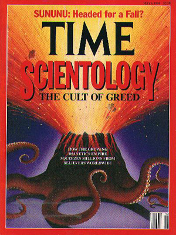
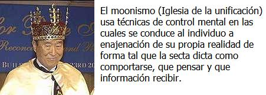
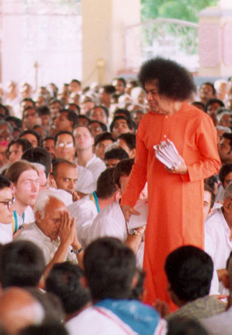

Introducción al estudio del fenómeno sectario
Por: Colegio Oficial de Psicólogos de S/C de Tenerife

El tema de las Sectas Destructivas, o también llamadas Sectas Religiosas Destructivas, plantea no sólo un problema social de índole delictivo, de estafa y evasión a la hacienda pública, o de penetración en los diferentes sectores de la sociedad, entre otros muchos sino, fundamentalmente, un problema de salud pública.
Porque las sectas destructivas a fin de cuentas son única y exclusivamente eso: Un auténtico problema de salud que está afectando cada vez a mayor número de personas de nuestra sociedad, y que detrás de esta captación de adeptos solamente existe un único y principal motivo: El dinero.
Sin embargo, dentro de la variedad y formas delictivas que las sectas destructivas acometen contra la sociedad, cabe resaltar dos por su amplia envergadura y su enorme peligrosidad. El primero de ellos es la cada vez mayor infiltración de las Sectas Destructivas en los distintos poderes y esferas sociales, destacando especialmente el político, judicial, la abogacía, el educativo y, sobre todo, el empresarial e industrial.
El segundo, si no fuera por lo patético y crudo de su realidad, movería quizás a la incredulidad. Se trata de las consecuencias negativas y graves de los niños que nacen dentro de la mayoría de Sectas Destructivas, o bien son criados y se desarrollan dentro de su ámbito.
Los niños son “educados” (si a ello se le puede llamar educación) dentro del represivo, contraproducente y estrecho marco doctrinal del grupo sectario. Y es precisamente aquí donde radica el peligro: “A estos niños se les acaba incapacitando totalmente para cualquier posibilidad de integración al medio social, cultural y educativo exterior y ajeno a la secta.
Los niños no viven su niñez de una manera normal sino enormemente nociva: La fuerte carencia de estímulos, la supresión y manipulación de las emociones y la prohibición de exteriorizarlas libremente, el deterioro en el crecimiento psicológico, la incapacidad de discernir lo que es correcto de lo incorrecto, la nula o escasa escolarización, los abusos sexuales y palizas pero, sobre todo, las alteraciones y problemas de tipo psicológico que va sufriendo el infante desde su más temprana edad. Se podría mencionar los sentimientos de culpa, los estados de ansiedad, inseguridad, miedos irracionales, insomnio, sentimientos depresivos, y un largo etcétera.
El ámbito de las Sectas Destructivas no es un fenómeno que abarque solamente un lugar geográfico determinado, sino que es extensible a la práctica totalidad de los países del mundo. Hay que destacar, por su importancia y gravedad, que una de las zonas geográficas mundiales donde mayor es la penetración, asentamiento y crecimiento de las Sectas Destructivas es América Latina, siendo México, Brasil, Venezuela, Guatemala, Argentina y Uruguay los países latinoamericanos que más están sufriendo este fenómeno totalmente negativo.
El peligro de las Sectas Destructivas no es algo ficticio, imaginario sino, desgraciadamente, algo real que está aumentando continuamente, y salvo contadas excepciones, ante la pasividad, ignorancia e incompetencia de los poderes estatales y locales correspondientes.
Uno de los hechos que más llaman la atención es que algunas Sectas Destructivas han conseguido perfeccionar de tal forma sus campañas de relaciones públicas, que han llegado a conseguir un alto grado de aceptación social, incluso entre los profesionales más cualificados.
Llama la atención que cada vez más profesionales de sólido prestigio suelen asistir a conferencias, cursos y seminarios patrocinados por determinadas Sectas Destructivas (destinadas a científicos, abogados, médicos, psiquiatras, psicólogos, políticos, clérigos, académicos, etc.) a las cuales les están otorgando un aire de legitimidad.
A pesar de que estas personas no saben o no les importa la vinculación que las sectas destructivas tengan en tales actos o reuniones, su simple presencia en tales actos puede ser interpretado como una aprobación indirecta a las actividades de las mismas. La diversidad de actos delictivos imputables a la mayoría de las Sectas Religiosas Destructivas es enorme; prácticamente abarcan todo el espectro de delitos de cualquier código penal.
Delitos como el tráfico de armas, venta de bebés, evasión de divisas, asesinatos, narcotráfico, prostitución obligatoria, amenazas, envenenamiento, estafa, contrabando, agresiones, robo, abusos y violaciones sexuales, secuestro, etcétera.
Precisamente, por su comportamiento y dinámica delictiva, muchas de estas Sectas Destructivas han sido expulsadas de bastantes países o bien prohibida su entrada en otros tantos. Están los casos de la Iglesia de la Cienciología (Dianóstico, Narconón, Criminón, etc.), de Ananda Marga, del Instituto Lingüístico de Verano, de TFP (Tradición, Familia, Propiedad), de la iglesia de la Unificación (secta Moon), etc.
La dificultad de definir el término “Secta”
Por: Secretaria de ayuda a personas afectadas por Sectas Destructivas

La denominación trae consigo un importante debate ya incluso para reconocer su etimología y significado. Unos piensan que “secta” viene del verbo sequor, que significa “seguir”; mientras, por el contrario otros hablan de que viene del verbo secare, que significa “cortar”. Pero el dilema va más allá de nuestros tiempos, pues ya el mismo Cicerón utilizaba la palabra en latín de secta, para denominar unas veces un modo de vida o comportamiento moral y otras para nombrar a un grupo político. Séneca la utilizaba para designar una escuela jurídica, filosófica o médica. Y Apuleyo para hablar de una banda de forajidos.
Así pues el término de secta lleva consigo desde hace mucho tiempo la inseguridad de saber de lo que se está hablando. Generalmente se habla de secta religiosa como un grupo minoritario que realiza una serie de prácticas y cultos diferentes de lo que se ha llamado religión oficial. Pero desde hace un tiempo sabemos que el uso de esta palabra se ha cargado de un sentido peyorativo llegando incluso a parecer un verdadero insulto. Por ello estudiosos de la sociología religiosa, de la historia de las religiones, etc… suelen evitar el uso del término para no llevar a confusión ni faltar al respeto a numerosas tendencias religiosas que podrían llevarlo perfectamente en su definición natural. De esta manera los investigadores suelen utilizar otros términos para referirse a estos grupos como “nuevas religiones”, “cultos”, … De hecho la mayoría de las sectas prefieren hacerse clasificar por ellos y promulgan la eliminación del término despectivo.
Sea como fuere el fenómeno de las sectas siempre ha despertado un enorme interés y preocupación en la sociedad. Pero si cabe podemos decir que en estos tiempos de libertad de pensamiento y con la cercanía del nuevo milenio, la nueva era, … ha tenido una relevancia especial el surgimiento de las mismas. Las religiones oficiales o tradicionales ya no parecen dar respuestas a los fieles que buscan otras salidas que puedan cubrir su fe.
Bien, pero aunque podemos llamar sectas, eliminando el carácter peyorativo, a toda la serie de nuevos movimientos religiosos, si es cierto que desde siempre la sociedad y los gobiernos han buscado intentar “separar el grano de la paja” para descubrir cuáles de esas sectas podrían ser peligrosas. Para ello la Fundación Argentina para el Estudio de la Sectas realizó la siguiente división: Grupos de riesgo (grupos no estructurados que se reúnen por afinidad de ideología o prácticas comunes que proponen diversos objetivos y que con el tiempo pueden llegar a esclavizar a los miembros del mismo. Se suelen encontrar entre individuos de clase media), Sectas Peligrosas (suelen instalarse en barrios humildes y propugnan que ellos tienen la verdad suprema. Llevan consigo la limitación de ciertas prácticas como las sexuales, fumar, etc.) y Sectas Destructivas (grupos perfectamente estructurados entorno a la figura de un líder y que mediante diversas técnicas consiguen la esclavitud de los fieles al gurú). De esta división se puede intuir que realmente el carácter despectivo que le dirigimos al término está en relación con las “sectas destructivas”.
Características de las sectas destructivas
Por: Secretaria de ayuda a personas afectadas por Sectas Destructivas
Tampoco hay en este sentido unanimidad para reconocer una serie de pautas que nos digan qué grupo es una secta, y sobre todo qué grupo es una secta destructiva. Lo que si está claro que el mayor peligro comienza a través de la manipulación mental y respecto a ello hay una serie de puntos estudiados por el investigador Robert Jay Lifton, que vienen a ser tomados actualmente como básicos para reconocer a una secta destructiva:
1. Control de la Atmósfera Social y de la Comunicación Humana. Con ello se busca el aislamiento social del individuo, procurando que no esté en contacto con ideologías o pensamientos diferentes a los del grupo. Suelen comenzar por apartarse de la familia y de los amigos. Pero también se produce este control dentro del grupo, procurando que el individuo no piense demasiado, teniéndolo todo el día atareado en las prácticas de culto u en otros deberes. No permitiéndole pensar.
2. Manipulación Mística. El o los líderes del grupo preparan un ambiente espiritual basado en una serie de milagros, profecías, experiencias místicas, … que hacen pensar al individuo que está en el buen camino “espiritual” tratando de captar toda su fe hacia lo que promulga el grupo, desconociendo el individuo que todo ello es artificial.
3. Redefinir el Lenguaje. Para dirigir el pensamiento de los fieles del grupo, se va introduciendo un lenguaje simple y preparado que anule la capacidad de crítica del individuo, de manera que se van estableciendo una serie de fórmulas de lenguaje y clichés. Se busca a su vez transmitir la idea de que sólo unos elegidos pueden comprender la verdad y que por lo tanto no hay que dar ningún tipo de explicación.
4. La Doctrina sobre la Persona. Esto quiere decir que antes de las inquietudes o necesidades del individuo o persona de dentro del grupo está la doctrina que promulgan y que practican. Es decir, se anteponen las necesidades del fiel a la doctrina que practica incluso en el caso de que ambas fueran contradictorias.
5. La Ciencia Sagrada. Se considera que la doctrina y prácticas doctrinales del grupo son irrevocables. La doctrina es capaz de darle respuesta al Todo a modo de única verdad absoluta y por lo tanto jamás estará sujeta a revisión.
6. El Culto a la Confesión. Con esta práctica se busca eliminar cualquier tipo de vida privada. El individuo pierde su individualidad para entregarse definitivamente a los designios del grupo. Se busca a su vez que ningún pensamiento del fiel sea desconocido para el líder, haciéndole creer que lo correcto es contarlo todo.
7. Demandas de Pureza Inalcanzables. Se busca la infravaloración y la culpabilidad del fiel a través de una idealización de la pureza absolutamente inalcanzable. De esta manera se realizan un serie de castigos y se anima al autocastigo dinamitando así la voluntad y la autoestima del individuo.
8. La Dispensación de la Existencia. Se juega con el miedo de los fieles y se decide quien puede o no existir e incluso cuándo se debe morir. Acompaña también a esta idea el “Solo podrás salvarte si sigues en el grupo, sino estarás condenado para siempre”. Pero también hay otras pistas como el bombardeo de cariño, hipnosis, anulación de los valores morales anteriores, indagación de la infancia, compromisos financieros, cambio de dieta, mentiras a los ajenos al grupo …
Clasificación de las sectas por el grado de peligrosidad
Por: Colegio Oficial de Psicólogos de S/C de Tenerife
Respecto al grado de peligrosidad de las Sectas Destructivas, éstas se suelen clasificar en función del daño que pueden hacer no sólo, aunque fundamentalmente al adepto, sino también a la sociedad. Este daño que las Sectas Destructivas hacen a sus adeptos se agrupa en tres categorías: Daño psicológico, daño económico y daño físico.
En base a esto, la peligrosidad de las sectas se clasificaría en cuatro niveles o grados, de menor a mayor peligrosidad. Estos serían los siguientes:
Grado A: Son aquellos grupos o sectas (no destructivas) que no dañan ni psíquica, ni física, ni económicamente a sus adeptos. Son las menos numerosas.
Grado B: Son aquellas sectas que ocasionan daños económicos, físicos y psíquicos a sus miembros y, además, muchas de ellas utilizan dietas alimentarías y tratamientos específicos nada aconsejables. En este grupo estarían, entre otras muchas, Sectas Destructivas tales como: Ágora, Ananda Marga, Arco Iris (Tierra Nueva), CEIS, Iglesia Adventista del Séptimo día, Partido Humanista (La Comunidad, Verdes Ecologistas), Opus Deí (Secta dentro de la Iglesia Católica), Testigos de Jehová, etc.
Grado C: Serían todas aquellas Sectas Destructivas, que aparte de tener las características del grado B, añaden otras que tienen relación con la violencia física, la prostitución obligatoria, la fabricación/venta de armas y la venta de bebés. Entre otras muchas, cabría destacar las siguientes: Centro de la Luz Divina, Iglesia de la Cienciología (Dianóstico, Narconón, Crirninón), Iglesia de la Unificación o Secta Moon, Niños de Dios (La Familia, Familia del Amor, Misioneros Cristianos), Hare Kríshna, Nueva Acrópolis, etc.
Grado D: Aquí estarían incluidas todas aquellas sectas o grupos destructivos que además de tener características de los grados B y C, pueden llegar a abarcar el extremo máximo de violencia, degradación y daño. Sin embargo, aquí se podrían hacer dos subgrupos: Por una parte estarían las sectas Diabólicas o Satánicas, por su posible relación con ritos diabólicos, satánicos y sacrificios humanos y, por otra parte estarían, las que sin ser sectas Satánicas pueden llegar a utilizar la violencia y el asesinato al máximo.
Ejemplos de ambos tipos serían, entre otras muchas y respecto al primer grupo, sectas tales como: Bambini di Satana, lerudole di Ishtar (satánico-feminista), La Familia (de Charles Manson), Satori, Las Hermanas del Halo de Belcebú, etc. Mientras del segundo grupo se pueden mencionar algunas, tales como: Templo del Pueblo, Orden del Templo Solar, Misión Israelita del Nuevo Pacto Universal, La Verdad Suprema, Park Soon Ja, Secta del pastor evangélico Ramón Morales, etc.

Clasificación de las sectas por su doctrina
Por: Roberto Antonio Federigo
La clasificación de sectas y nuevos movimientos religiosos es sumamente complicada. La mayor parte de los especialistas coincidimos en ésta, no obstante no ocurre lo mismo en las subdivisiones. Los motivos de la divergencia entre investigadores se deben precisamente, amén de hipótesis personales, a lo intrincado de las influencias dogmáticas y ritualísticas, confusiones doctrinales, y disidencias, siendo la clasificación más difícil la de los grupos de la corriente sincrética. Dentro de esta corriente podemos hallar de varios tipos, desde grupos con origen desconocido, hasta algunos no - religiosos, etc.
En esta clasificación, deben considerarse también las analogías entre grupos que aparentan poca similitud, como puede ser el caso de los grupos del tipo gnóstico, en comparación con los luciferistas. Existen asimismo grupos con nombres parecidos como en el caso de “Ciencia Cristiana” e “Iglesia de la Cienciología” que poco o nada tienen en común, exceptuando el énfasis aplicado en el supuesto origen de las enfermedades y su posible cura.
La diferencia entre secta y N.M.R. se encuentra posiblemente más en una definición terminológica que clasificatoria, es decir muchas veces no existen indicios que lleven a los especialistas a saber con certeza si un grupo es una secta o un N.M.R., por ejemplo: ¿secta moon? o ¿Iglesia de la Unificación?. La tesis más utilizada para diferenciarlos es una suma de condiciones a saber:
Secta: 1. Liderazgo directo y marcadamente autoritario hacia sus adeptos, decisión sólo del líder. 2. Vida comunitaria (no en todos los casos). 3. Poco o mediano caudal de integrantes. 4. Surgimiento cronológico reciente (en comparación a N.M.R. o grandes religiones). 5. Expansión limitada y localización regional. 6. Poco reconocimiento social. 7. Tendencia a no registrarse en los contralores de culto estatales. 8. Pronunciada aversión hacia instituciones, religiones e inadaptabilidad social.
N.M.R:
Liderazgo indirecto y directo, ejercido por uno o varios, delegado a otros, decisiones de uno o varios.
Vida individual, exceptuando a misioneros y otros.
Gran cantidad de adeptos.
Surgimiento cronológico antiguo.
Gran expansión y localización continental o mundial.
Reconocimiento social.
Por lo general registrados en los contralores de culto estatales.
Acercamiento generalmente filántropo - social con algunas instituciones y diálogo con otros N.M.R. o religiones oficiales.
Otro motivo que lleva muchas veces a denominar como N.M.R. un grupo que decididamente es una secta es para que el investigador se evite problemas legales.
Muchas sectas poco trascendentes aunque compartan doctrinas con otras y hasta con algún N.M.R., funcionan de forma autocéfala, en grupos muy reducidos y en algunos casos con poco conocimiento entre sí, forman parte de una de las corrientes, lamentablemente en mayor crecimiento y que engloba a grupos de origen Cristiano, Pagano y Sincréticos: La Nueva Era. Esta corriente que crea tal vez un gran sincretismo entre grupos de orígenes diferentes es uno de los motivos por el cual la clasificación de sectas y N.M.R., es dificultosa y no definitiva.
Grupos de origen cristiano de corte fundamentalista:
Evangélico libre. Ej.: Ejercito de salvación, Evangélico pentecostal. Ej.: Alianza cristiana pentecostal, Adventista. Ej.: Iglesia Adventista del Séptimo Día

Grupos de origen cristiano de corte paracristiano:
Espiritistas. Ej: Unión Internacional de Espiritistas cristianos, Curativo. Ej: Ciencia cristiana, Testigos de Jehová, Iglesia de Jesucristo de los Santos de los Últimos Días (mormones).
(N. del Editor.: El Opus Dei puede considerarse como una secta destructiva de origen católico. El amparo y respaldo del papado no hace que este grupo sea menos sectario y destructivo que cualquiera de los otros grupos que menciona Roberto Antonio Federigo en esta sección.)
Grupos de origen pagano esotérico:
Rosacruz A.M.O.R.C., Teosofista. Ej.: Sociedad Teosófica, Gnóstico. Ej.: Movimiento Gnóstico Cristiano, Metafisista. Ej: Gran Hermandad de Saint Germain (Ray Sol).
Grupos de origen pagano orientalista:
Hinduista. Ej.: Sociedad Internacional para la Conciencia de Krishna (Hare Krishna), Budista. Ej: Zen Macrobiótico, Sintoísta. Ej.: Soka Gakkai, Babista (Islámico). Ej.: Fe Baha’i.
(N. del E.: El movimiento Hare Krisnha ha sido declarado Secta destructiva por el Gobierno de la República Federal de Alemania (1980), el Informe del Parlamento Europeo (1984), el Informe de la Comisión Interministerial de Israel (1987), y el Informe de la Asamblea Nacional Francesa (1995)).
Grupos de origen neopagano:
Coven (Culto antiguo), Hermandad del lobo (Asatrú), Chamanista. Ej.: Cleargreen Inc.
Grupos de origen sincrético:
Iglesia de la Cienciología; Sufí-gnóstico. Ej.: Escuelas del Cuarto Camino, Iglesia de la unificación (Moon); Afro - brasileño (Umbanda, Kinbanda). Ej.: Fraternidad Vóvó María Redonda de Angola; Afro-amerindio (santería, vudú). Ej.: Ochá (Yoruba); Platillistas. Ej.: Movimiento Raeliano, Fraternidad Cósmica; Satánicas: The Process, Iglesia de Satán; Políticas: Movimiento Humanista, White Aryan Resístanse.
(N. del E.: La Iglesia de la Cienciología o Dianética ha sido calificada de especial peligrosidad por el Parlamento Europeo, que la considera una “secta dura”. En Australia se le revocó su estatuto de religión; en Francia se condenó a Lafayette Ronald Hubbard, su fundador por fraude; en Alemania se le ha negado el reconocimiento debido a sus “objetivos expansionistas” aludiendo sus propósitos comerciales, presuntas relaciones con el crimen organizado y por ser considerada una amenaza para la sociedad. En Estados Unidos ha sido objeto de diversas acciones judiciales sobre todo alrededor de problemas de seguridad nacional.)
Los líderes de las sectas
Por: Secretaria de ayuda a personas afectadas por Sectas Destructivas
La pieza clave de las sectas, especialmente de las destructivas, es el o los líderes. Ellos se autoproclaman “elegidos” para una determinada misión que incumbe a todo el planeta. De esta manera terminan por hacerse pasar e incluso creerse una especie de Mesías o salvadores de las almas del mundo. Así fuerzan que poco a poco surja un importante culto a si mismo, de manera que la doctrina y la figura del líder se funden en uno mismo. Suelen ser personajes de carácter fuerte, con fácil palabra para convencer a los oyentes, desprenden una especie de magnetismo social que saben aprovechar. Poseen intuitivamente una gran capacidad de análisis social de manera que siempre dicen lo que los demás quieren oír. Se da por entendido que muchos de estos líderes pueden ser enfermos mentales que llegan a creerse los salvadores, pero la mayoría de ellos buscan alimentar su ego y sus ansias de control.
Trastornos que puede ocasionar una Secta Destructiva a sus adeptos
Por: Colegio Oficial de Psicólogos de S/C de Tenerife
Normalmente casi todas o todas las sectas ocasionan una serie de perjuicios y trastornos, tanto físicos como mayormente psicológicos, a sus adeptos, de menor a mayor gravedad. Sin embargo, toda la problemática y/o secuelas que los grupos sectarios pueden ocasionar a sus adeptos durante su estancia en dichos grupos destructivos, depende fundamentalmente de tres características.
La primera es del tipo de Secta Destructiva. Como se ha visto anteriormente, no todas las sectas alcanzan en su propia dinámica, estructura y adoctrinamiento, la misma peligrosidad. No es lo mismo una persona que es adepta de una Secta Destructiva clasificada dentro del grado B que otra que pertenece a un grupo del grado C o del grado D.
La segunda característica es el tiempo de permanencia o de estancia del adepto en la secta en la cual ha estado en cuestión. Obviamente, los efectos negativos que una Secta Destructiva ejerce en sus adeptos, no son los mismos en un individuo que ha permanecido solamente tres meses, por ejemplo, que otro que haya permanecido más de cuatro años.
Y, por último, la tercera característica es la resistencia psíquica y física del adepto al lavado de cerebro, es decir, a la modificación del pensamiento. No todas las personas tienen, o poseen, la misma resistencia psíquica y física a un “bombardeo” constante de dogmas, filosofías y teorías sin sentido, a una presión psicológica cada vez mayor y constante en el tiempo, a un intento de cambiarle su personalidad, emociones y sentimientos, a una alteración brusca en el sueño, a una alimentación escasa o bien negativamente vegetariana, a un ritmo de trabajo excesivo y nulamente remunerado, a un control de la información, o a una ruptura de lazos familiares, de pareja, sexuales, amistosos, de ocio, etc.
Entre los perjuicios o trastornos que puede ocasionar una Secta Destructiva a sus adeptos estarían, entre otros muchos, los siguientes:
1. Cambio de personalidad (autómata):
Es uno de los primeros efectos que familiares y/o amigos van notando en el sectario. Este cambio de personalidad abarca tanto a nivel de actitudes y conocimientos como, fundamentalmente, a nivel de conducta. A medida que el adepto se va introduciendo más profundamente en la dinámica, estructura y dogma del grupo sectario, mayor va siendo su cambio de personalidad. Al adepto, además, se le va enseñando a que responda o se comporte de determinada forma ante determinadas situaciones sociales o contactos con personas ajenas a la secta destructivo. Es uno de los efectos negativos de las sectas que más fuertemente influyen sobre los adeptos.
2. Fuerte dependencia al grupo sectario:
Haciendo una similitud, obviamente con sus limitaciones y diferencias, con el fenómeno de las drogas, al adepto le van creando dentro del grupo sectario una fuerte dependencia al mismo. Esta dependencia es cada vez mayor a medida que la permanencia dentro de la secta se va alargando en el tiempo.
Es por ello, que cuando un adepto sale de un grupo sectario, durante los primeros meses, y en algunos casos incluso años, no sabe vivir sin hacer continuamente referencia a la secta destructiva en la que estuvo. Se encuentra como si le faltase algo, siendo ese algo la propia secta que le creo dependencia.
3. Miedo (irracional) a todo lo que no sea la secta:
Debido a la modificación de pensamiento que se le hace constantemente y a la manipulación y alteración de las emociones, sentimientos y pensamientos, al adepto le van metiendo gradualmente, y sin que se percate de ello muchas veces, toda clase de miedos, todos ellos irracionales, sin sentido y sin ninguna base ni fundamento. Miedo a todo el mundo y personas ajeno a la secta; miedo a no hacer las cosas bien; miedo a los castigos; miedo al “más allá”; miedo al líder o a su dios; etc.,
4. Elevados trastornos psíquicos:
Es uno de los perjuicios o trastornos principales que realizan las sectas destructivas sobre sus adeptos. En un mismo individuo normalmente suelen darse bastante de estos trastornos. La variedad de trastornos que las sectas destructivas acaban consiguiendo que sus adeptos desarrollen, abarca prácticamente toda la patología clínica, desde los más leves hasta los más graves como las paranoicas y otros.
5. Anulación vida íntima/privada (frustraciones, depresiones):
Aquí nos encontramos con uno de los trastornos o perjuicios quizás, más despersonalizadores que puedan existir, y que se traduce en un control total de la vida del adepto por parte del grupo sectario. Cuando una persona va entrando, poco a poco y sin darse cuenta, en un grupo sectario, una de las primera cosas que le van modificando hasta casi desaparecer, es su vida íntima y privada. Lo que da como resultado, la aparición de un gran número de frustraciones y depresiones al habérsele “arrancado” algo tan preciado como el derecho a la intimidad y vida privada que tenemos todas las personas.
6. Regresión, retroceso infantil:
En muchísimas sectas destructivas, aunque no en todas, debido a la presión psicológica coercitiva constante en el tiempo, a referencias continuas en supuestas “terapias” realizadas al adepto, y a una serie de características más, el razonamiento y la mentalidad del adepto sufren no solamente un detenimiento significativo, sino que éste acaba pensando y razonando, o teniendo una edad mental, más propia de un niño o adolescente, que de un adulto. En algunos casos, incluso cambian los rasgos físicos de la cara de los adeptos, haciéndoseles mucho más “aniñados”.
7. Creación de inmadurez:
Debido a que al adepto se le despoja de todo tipo de responsabilidad, que solamente tiene que dar cuentas a su líder y dios, que solamente tiene que obedecer y hacer lo que se le manda y nada más, el adepto se acaba convirtiendo en una persona totalmente inmadura, sin responsabilidad ninguna, e incapaz de tomar cualquier decisión por sí solo (las decisiones las toman por él).
8. Escaso nivel razonamiento/crítica:

Es una de las consecuencias más serias que acaban teniendo los adeptos. Cuando una persona entra en una secta destructiva, le van aumentando significativamente su aspecto emocional, y disminuyéndole al máximo su aspecto de crítica o razonamiento. Dentro de un grupo sectario, está mal visto y no se permite razonar ni pensar por uno mismo. Y menos aún, discrepar o llevarle la contraria al líder del grupo. Cuando una persona consigue salir de un grupo sectario inmediatamente se le ha de ayudar a que vuelva a trabajar y aumentar todo su aspecto de crítica, razonamiento, juicio, etc.
9. Debilitación física del organismo:
Es uno de los pilares básicos en los que se sustentan las Sectas Destructivas y una parte fundamental del lavado de cerebro. Precisamente para que la secta pueda cada vez hacerle una mejor modificación del pensamiento a cada adepto en particular, éstos han de tener las defensas psíquicas, y físicas, lo más bajas posible. Así el sujeto se siente incapaz, no solamente de razonar o darse cuenta de lo que le sucede, sino de impedir o detener lo que le están haciendo.
La debilitación física del organismo, no solamente es a base de un dieta vegetariana estricta sino, además, de tenerle trabajando casi todo el día (más de trece horas), de permitirle dormir muy pocas horas, de interrumpirle el sueño, de sesiones largas de meditación y rezos, muchas de ellas en posturas que cansan al organismo, etc., no es de extrañar, por tanto, que muchas muchachas y mujeres que están en determinadas sectas destructivas (como la Iglesia de la Unificación o secta Moon), debido a la presión psicológica y al estrés tan fuerte que soportan diariamente y al efecto que todo ello tiene sobre el aspecto hormonal, tengan amenorrea (falta de menstruación).
10. Incomunicación mundo exterior (reducción de los sentidos):
Es otro de los pilares básicos, y nefastos, no solamente de la modificación del pensamiento, en el que se basan las Sectas Destructivas. Mantener incomunicada, gradualmente, a una persona de todo el mundo ajeno a la secta, darle únicamente la información que se genera dentro del propio grupo sectario, y hacer que el adepto se dedique cada vez más en cuerpo y alma a dicho grupo, da como resultado una reducción del aspecto sensitivo de una persona.
11. Incapacidad para razonar coherentemente:
Debido a la presión psicológica, al estrés y tensión continuas, a la escasa y mala alimentación, al aislamiento parcial o total con el mundo ajeno a la secta, a la adquisición de un nuevo “lenguaje” dentro del grupo sectario, al cansancio físico, a la incapacidad de tomar decisiones, y a la manipulación emocional y de pensamiento, al adepto cada vez le va siendo más difícil razonar de una forma totalmente coherente a como lo hacía antes de su ‘ingreso en la Secta Destructiva.
12. Ruptura lazos familiares, amorosos, sexuales, efectivos, amistosos, sociales, de trabajo, etc.:
Es otro de los aspectos fundamentales de una Secta Destructiva, y uno de los primeros que van aplicando al adepto. A éste, paulatinamente, y a través de una gradual modificación del pensamiento le van enfrentando con su entorno familiar, de pareja, etc. La razón es básica y efectiva. Al adepto que le van introduciendo poco a poco dentro del grupo sectario le van enfrentando con su familia para que rompa con ella, haciéndola ver que ésta es la causante de todos sus males y problemas.
Los motivo son dos: El primero, para que cada vez tenga menos referencias externas a la secta y no pueda comparar la información que le da ésta con la que le puedan dar sus familiares y así no se salga del grupo sectario; y la segunda razón estriba en que si el adepto ha roto definitivamente con su familia y en algún momento quiere dejar la Secta Destructiva en la que se encuentra, se lo piense dos veces antes de salir ya que no tendrá a nadie fuera de la secta.
13. Manipulación sexualidad:
Es otro de los aspectos más importantes que se dan dentro de una Secta Destructiva para controlar a sus adeptos. Bien por exceso o mayormente por defecto. Controlando la sexualidad de un individuo se puede acabar controlando muchas otras facetas de su personalidad. En muchas Sectas Destructivas los adeptos son emparejados no en función de sus deseos sino en función de los del líder sectario, y es éste quien dice cuando han de mantener relaciones sexuales, y cuando la mujer ha de quedarse embarazada, entre otros muchos comportamientos sexuales impuestos. Las consecuencias negativas de este control sexual, se verán un poco más adelante.
14. Ansiedad:
La ansiedad es uno de los trastornos psicológicos más comunes que se da en todas las Sectas Destructivas. El adepto normalmente suele estar en estados largos de tensión, lo que le facilita al grupo sectario su “adoctrinamiento”, modificación del pensamiento y el introducirse cada vez más dentro de dicho grupo.
La ansiedad, obviamente, es producida por la propia Secta Destructiva a través no solamente de la alteración de las emociones y sentimientos sino, también, mediante la enorme inseguridad de todo tipo que diariamente va desarrollando el adepto a causa de la influencia total de la dinámica, estructura y funcionamiento del grupo sectario.
La ansiedad es uno de los factores principales con los cuales juegan las Sectas Destructivas para tener cada vez más controlados a sus adeptos. Ha habido bastantes casos de adeptos que debido a mantener constantemente situaciones de ansiedad han tenido consecuencias bastantes graves (junto con otras causas) tales como depresiones o esquizofrenias.
15. Inseguridad:
El factor inseguridad va íntimamente ligado a la ansiedad que va desarrollando el adepto durante su estancia en la Secta Destructiva. La inseguridad acaba haciendo al adepto una persona incapaz de valerse por sí mismo y de poder tomar sus propias decisiones, entre otros perjuicios.
16. Autoestima baja, escasa o nula:
Si hay algo que tienen muy claro los líderes de grupos sectarios es que han de conseguir que la autoestima de sus adeptos estén, como se suele decir “por los suelos”. Con eso se consigue, entre otras cosas, una mayor obediencia al líder o líderes del grupo.
La disminución de la autoestima la va consiguiendo el adepto con gran rapidez cuando diariamente a éste le hacen ver que no solamente sus padres son los causantes de sus problemas o conflictos, sino que el mismo es también el causante de todo lo negativo que ha hecho en su vida.
Es por ello, que en muchas Sectas Destructivas, cuando los adeptos tienen que contar delante de los demás miembros toda su vida pasada, se aplaude y se refuerza exclusivamente aquellas situaciones o cosas negativas, mientras se ignoran las positivas. Es decir, a los adeptos en una Secta Destructiva se les refuerza únicamente los aspectos negativos, nunca los positivos.
17. Falta de concentración y atención:
Debido a la carencia sensitiva, más o menos intensa, que el adepto va teniendo en el grupo sectario, a la ruptura con lazos exteriores a la secta, a la escasa y mal alimentación, y a las “lecturas” totalmente inservibles y contraproducentes que le obligan leer dentro del grupo, el adepto cada vez va perdiendo mayor capacidad de concentración y atención, así como pérdida de memoria.
Es por ello, que cuando un adepto sale de una Secta Destructiva, una de las primeras cuestiones que un profesional ha de hacer con él, es que vaya recuperando la capacidad no solamente de crítica y razonamiento sino, también la de concentración y atención.
18. Pesadillas:
Las pesadillas es un trastorno bastante común que suelen padecer los ex adeptos. La mayoría de ellos las desarrollan durante los primeros meses de abandono del grupo sectario, aunque hay muchos otros ex adeptos que las arrastran durante años. Si en los adultos es serio dicho problema, en los niños es aún mucho más, fundamentalmente cuando les viene a la mente el “infierno” sectario que vivieron de agresiones, palizas y todo tipo de abusos.
19. Depresiones:
Normalmente la mayoría (no todos) de los adeptos que abandonan o son sacados de una Secta Destructiva, durante los primeros meses de este alejamiento sectario, suelen tener depresiones de mayor o menor gravedad e intensidad.
Una persona que sale de un grupo sectario (y más si ha estado durante muchos años), que a fin de cuentas es un auténticos grupo totalitario, se encuentra con que vuelve a una sociedad de la que fue “arrancada” pero que para él es algo nuevo, ya que entran en conflicto los valores que le han inculcado durante su estancia dentro de la Secta Destructiva, con los suyos antes de entrar en ella.
Esa confrontación suele ser enormemente fuerte para muchos ex adeptos que por tanto acaban desarrollando todo tipo de depresiones, entre otras patologías. Sin olvidar las depresiones que desarrollan muchos adeptos durante su permanencia en la secta, y donde carecen de la más mínima ayuda y tratamiento profesional.
20. Trastornos, patologías y disfunciones sexuales:
Como ya se ha mencionado anteriormente, la manipulación directa o indirecta de la sexualidad es uno de los aspectos más importantes que utilizan las sectas destructivas para controlar y manipular a sus adeptos, social y emocionalmente. Como consecuencia se acaba desarrollando toda una serie de trastornos o disfunciones sexuales.
Entre todos ellos, cabría destacarse los siguientes: Represión sexual, sentimientos de culpa, miedos sexuales, amenorrea, tendencias sado-masoquistas, anorgasmia secundaria, inhibición del deseo sexual, impotencia secundaria, eyaculación precoz, fobia o evitación sexual, etc.
¿Qué hacer si tengo a un amigo o familiar victima de una Secta Destructiva?
Por: Secretaria de ayuda a personas afectadas por Sectas Destructivas
Básicamente hay que tener en cuenta que lo que buscan los “captadores” es apelar a nuestras emociones. No intentan convencer a través de la mente, sino a través de la emotividad, creando así numerosas sensaciones de paz, armonía, alegría, etc. Especialmente “atacan” en momentos en los que descubren que el individuo pueda tener algún problema, estar deprimido o angustiado, etc. Así automáticamente ofrecen una excesiva animosidad y cariño ofreciendo protección ante el sufrimiento. En ese momento, el individuo es más vulnerable y en poco tiempo puede terminar aceptando lo que le dicen.
Un importante método de captación son las reuniones o conferencias de tipo espiritual. En este sentido, y si en algún momento decidimos acudir a ellas, debemos tener siempre presentes varias preguntas: ¿Qué ideología profesan? ¿Quien lo financia? ¿Que quieren de mí? ¿Puedo abandonar la sala sin coacción en cualquier momento? ¿Me piden fondos económicos, y si es así para qué? etc.
Pero el mayor problema llega cuando uno ya está dentro. En este caso las familias y los amigos suelen preocuparse mucho por intentar determinar si los cambios de conducta de un individuo pueden tener que ver con que “haya caído” en una secta.
Una de las claves para descubrir si un familiar se encuentra en una secta suele ser el paulatino aislamiento que lleva con el tiempo a la ruptura total de las relaciones familiares. Pero también lo son la pérdida de interés por el trabajo, empobrecimiento de la capacidad de habla y comunicación, deterioro físico, inestabilidad emocional, ensimismamiento muy frecuente, etc.
Lo que se debe hacer
Lo más importante es buscar asesoramiento en profesionales acreditados en el tema. Pero aquí damos unas claves reconocidas y recomendadas por profesionales:
Como decíamos antes, lo más característico es el aislamiento. De manera que lo más importante es procurar no perder la comunicación con el individuo aun a pesar de que éste no conteste las llamadas o se deje ver muy pocas veces. En este sentido es muy necesario evitar las prohibiciones o ensañamiento por lo que está haciendo, si bien es preferible no hablar del grupo y mantener conversaciones dialogantes y con mucha capacidad de escucha. Lo más importante es mantener, al menos en apariencia una gran serenidad y tranquilidad con el adepto.
Manifestar continuamente, pero sin presión nuestro cariño y amabilidad hacia el individuo. Procurar evitar que se sienta marginado en la familia o en el grupo de amigos. De manera que hay que recordarle que siempre es bienvenido al núcleo familiar tenga las creencias que tenga.
Es importante también tener muy presente que el individuo está manipulado mentalmente, por lo tanto debemos tomarnos con calma las cosas que comente o diga a pesar de que nos parezcan terribles u obviamente contradictorias o falsas. Hay que recordad que no es él, el que está hablando. Así que conviene tener mucha paciencia y mucha desconfianza de lo que dice.
Hemos de procurar manifestar interés por las actividades del individuo, afín de llevar un diario o libreta donde apuntar todo lo que va sucediendo. Se deberían apuntar también los nombres, direcciones y teléfonos de aquellos individuos que sabemos que también pertenecen al grupo.
Recoger toda la información que podamos en prensa, libros, conferencias, etc. sobre el grupo en cuestión. Se busca estar informado al máximo sobre cómo funciona la secta y cuales son sus características propias. Si es posible, incluso, ponerse en contacto con exmiembros del grupo.
Lo que no debe hacerse
Hay una serie de cuestiones que se deben evitar:
Una de las cosas más recomendadas es evitar mandar dinero al familiar o al amigo. No se deben suministrar fondos económicos ni al individuo ni al grupo, así limitaremos su capacidad de acción.
No dar ningún tipo de información familiar ni documentos originales al grupo y procurar que el individuo no disponga de ellos (excepto los suyos exigidos por la ley).
No utilizar palabras despectivas o fuertes críticas. Procurar no demostrar que va en contra de las creencias del grupo.
No apresurarnos a intentar sacar al individuo del grupo. Ha de ser algo paulatino, pues la mayoría de los grupos suelen alejar su presión de aquellos individuos que ya llevan un año en la comunidad.
No permita que le engañen supuestos “especialistas” cobrándole mucho dinero por novedosos tratamientos. Hay muchos estafadores que viven del tema.
Ante todo no se sienta culpable por lo sucedido. Tampoco se deje intimidar por el poder del grupo.
Si fuera el caso puede denunciar lo que está sucediendo.
Listado de sectas peligrosas y destructivas
Por: Secretaria de ayuda a personas afectadas por Sectas Destructivas
A continuación relatamos una pequeña lista de las nuevas religiones más conocidas, algunas de ellas pueden considerarse destructivas o peligrosas. Muchos de sus líderes fundadores están muertos y sus discípulos han recogido el relevo:
Asociación Gnóstica de estudios de Antropología y Ciencias (Gnosis): originaria de Colombia, su líder es el que se hace llamar Samael Aun Weox. Se reivindica discípulo de Arnoldo Krumm-Heller, el rosacruz. De tradición cristiana.
Bhgwan Shree Rajneesh: originaria de la India, su lider es Osho, “iluminado” a los 21 años. De tradición sincrética.
Centro Esotérico de Investigaciones Sociales: Originaria de España, su lider es Vicente Lapiedra. Ha sido condenado a varios años de prisión por usurpación de funciones, estafa, fraude, inducción a la prostitución, y numeroso cargos más. De tradición sincrética.
Ciencia del Alma (Sant Tankar Singh): Ciencia del Alma (Sant Tankar Singh): originaria de la India, su líder es Thakar Singh. De tradición Sikhista.
Comunidad Cristiana del Espíritu Santo (Iglesia Universal del reino de Dios — Oración Fuerte al espíritu Santo): originaria de Brasil, su líder es Edir Macedo. Detenido por utilizar fondos que provenían de la droga. De tradición cristiana.
Davidianos o Estudiantes de Los 7 Sellos (iglesia Adventista Davidiana del Séptimo Día): Originaria de EEUU, su líder es David Koresh. Tienen a su cargo el asesinato por cremación de 87 miembros de la orden. De tradición evangélica.
Energía Humana y Universal: Originaria de Ceilán, su líder Dasira Narada. De tradición orientalista.
Falugong: Originaria de China, su líder actual es Maestro Li. De tradición orientalista.
Gran Fraternidad Universal o Fraternidad Blanca: Originaria de Venezuela, su líder es Doctor Serge Raynaud de la Ferriére. De tradición ocultista.
Hare Krishna: Originaria de EEUU, su líder se hizo llamar Bhaktivedanta Swami Prabhupada. Han sido acusados de manipulación mental, abuso sexual de jóvenes, tráfico de joyas y drogas. De tradición hinduista.
Hermandad blanca: Su lider es Swami Sananda. De tradición new age.
Heaven’s Gate: Originaria de EEUU, su líder es Marshall Herff Applewhite. Protagonizaron un suicidio colectivo de 39 individuos incluyendo el cabecilla de la secta. Más tarde murió otro individuo. El método usado fue el de el envenenamiento. De tradición platillista (ovnis).
Iglesia de la Cienciología: Originaria de EEUU, su líder es Ronald Hubbard. Perseguida por el FBI, es una de las sectas más destructivas y peligrosas que se conocen. De tradición pseudocientífica.

Iglesia de los Santos de los Últimos días (mormones): Originaria de EEUU, su líder es Joseph Smith a quien supuestamente un ángel le reveló la verdad sobre Dios. Consideran a la raza negra como inferior, y se les acusó de trabajar durante muchos años para la CIA. De tradición pseudocristiana.
Iglesia de la Unificación: Originaria de Corea, su líder es el reverendo Moon, se hace pasar por el nuevo Mesías. Apoyó fuertemente las dictaduras latinoamericanas y amasa una gran fortuna. De tradición pseudocristiana.
La Verdad Suprema: Originaria de Japón, su líder es Shoko Asahara. Acusados del atentado con gas sarín en un metro de Tokio. De tradición sincrética.
Maitreya: Originaria de Escocia, su líder es Benjamin Creme. De tradición ocultista.
Meditación Trascendental: Originaria de EEUU, su líder es Maharishi Mahesh Yogi. De tradición hinduista.
Mov. por la Restauración de los Diez Mandamientos de Dios: Originaria de Uganda. Secta descubierta hace poco tiempo de tipo milenarista. Responsables de asesinar a 924 fieles que primero golpearon y después quemaron. De tradición cristiana.
Niños de Dios: origen EEUU, su líder es David Berg. Fueron acusados de continuas denuncias de acoso a menores y prostitución infantil. De tradición pseudocristiana.
Nueva Acrópolis: Originaria de Argentina, sus líderes son Ángel Livraga y Ada Albretcht. De tradición pseudofilosófica.
Orden del Templo Solar: Originaria de Suiza, sus líderes son Luc Jouret y Joseph Di Mambro. Llevan a su costa numerosos suicidios colectivos a través del método de cremación. De momento han muerto 69 personas. De tradición ocultista.
Raelianos: Originaria de EEUU, su líder es Rael (extraterrestre). De tradición platillista (ovnis).
Rosacruces: De tradición ocultista.
Sahaja Yoga: Originaria de la India, su líder es Shri Mataji Nirmala Devi. De tradición sincrética.
Satanic Church: Su líder es Anton Szandor LaVey. De tradición satánica.
Sathya Sai Baba Organization: Originaria de la India. Se autoproclamó un dios, salvador del mundo. Algunos de sus milagros son contradictorios con otros aspectos de su vida como el atentado que sufrió en 1993 y del que salió vivo gracias a una alarma-despertador, en vez de por sus “proezas”. De tradición orientalista.
Tradición, Familia y Propiedad: Originaria de Argentina, su líder es Plinio Correa de Oliveira. Criticado por su actitud hacia sus adeptos y sospechoso de la desaparición de unos jóvenes. De tradición católica.
Ummo: Originaria de España, su líder es Fernando Sesma Manzano. De tradición platillista (ovnis)
Zen Macrobiótico: Originaria de Japón, su líder es George. Ohsawa. De tradición budista.
Volver a la sección Sociedad y religión
Comentarios
Comments powered by Disqus